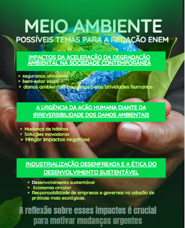
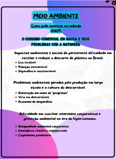

Temas para redação do enem

TEMA: A Urgência da Ação Climática e a Sustentabilidade Ambiental: Desafios e Caminhos para um Futuro Sustentável
POSSÍVEIS ARGUMENTOS:
Argumento de autoridade
ONU e Acordo de Paris: A Organização das Nações Unidas, por meio de acordos internacionais como o Acordo de Paris, sustenta que a ação climática imediata é indispensável para limitar o aumento da temperatura global a 1,5 °C até o final do século.
Argumento histórico
Desde a Revolução Industrial, a humanidade intensificou a exploração de recursos naturais e o uso de combustíveis fósseis, o que marcou o início da aceleração do impacto ambiental. Esse processo histórico mostra que o desenvolvimento econômico tradicional sempre esteve atrelado à degradação ambiental, o que exige, hoje, uma ruptura com esse modelo.
Argumento de exemplificação
O derretimento das calotas polares, os incêndios florestais em larga escala — como os que atingem anualmente a Amazônia e a Califórnia —, além de inundações e secas extremas em diferentes continentes, são exemplos concretos dos efeitos das mudanças climáticas, com impactos diretos na saúde pública, na agricultura e na economia.
Argumento de comparação
Enquanto países como a Alemanha e a Dinamarca avançam na produção de energia limpa e na gestão eficiente de resíduos, outras nações ainda mantêm altos níveis de emissão de carbono e políticas ambientais frágeis. Essa disparidade revela a necessidade de um esforço global, mas também de adaptações locais mais comprometidas.
Argumento de raciocínio lógico (ou causa e consequência)
O uso intensivo de combustíveis fósseis, o desmatamento e a poluição provocam desequilíbrios ecológicos severos. Como consequência, há perda de biodiversidade, elevação do nível do mar e ameaças à segurança alimentar. Sem intervenção imediata, esses efeitos tendem a se agravar, comprometendo o futuro das próximas gerações.

O consumo comercial em massa e seus problemas com a natureza
TIPOS DE ARGUMENTOS
1 - Argumento de Citação
"O consumismo é a nova forma de colonialismo. Ele coloniza as mentes, os corações e os desejos das pessoas, fazendo-as acreditar que a felicidade está no ter e não no ser."
- Leonardo Boff
2 - Argumento De Exemplificação
O avanço na capacidade de produção das indústrias modernas trouxe consequências como o excesso de produção e a baixa demanda, resultando em desemprego, desmatamento e poluição, sem uma solução definida.
3 - Argumento De Comparação
A globalização deixou o mundo mais conectado, integrativo e acolhedor, ao mesmo tempo que delimitou fronteiras divisórias entre países produtores e compradores, aumentando a poluição pelo despejo inadequado de lixo e retirada de matéria prima em massa, causando maior desequilíbrio do que já se tinha.
4 - Argumento de Causa e consequência
A mineração de lítio é uma prática muito comum no mundo moderno, onde conforme a tecnologia avança, mais será necessário a produção de baterias e peças eletrônicas no mundo. Com isso, a disputa de extração dessa matéria prima causa problemas com o efeito estufa, degradação regional e promoção da extinção da fauna e flora nos locais atingidos.
5 - Argumento de Analogia
A poluição de antigamente, causada principalmente pelo carbono, é refletida hoje em dia na poluição pelo excesso de produção e descarte inadequado de resíduos no meio ambiente.
6 - Dados
Segundo a ONU Meio Ambiente (2023), mais de 400 milhões de toneladas de plástico são produzidas globalmente a cada ano, e cerca de 36% desse total são destinados a embalagens descartáveis, que muitas vezes acabam em aterros, rios e oceanos. Estima-se que 8 a 13 milhões de toneladas de plástico entrem nos oceanos anualmente, ameaçando a vida marinha e os ecossistemas.